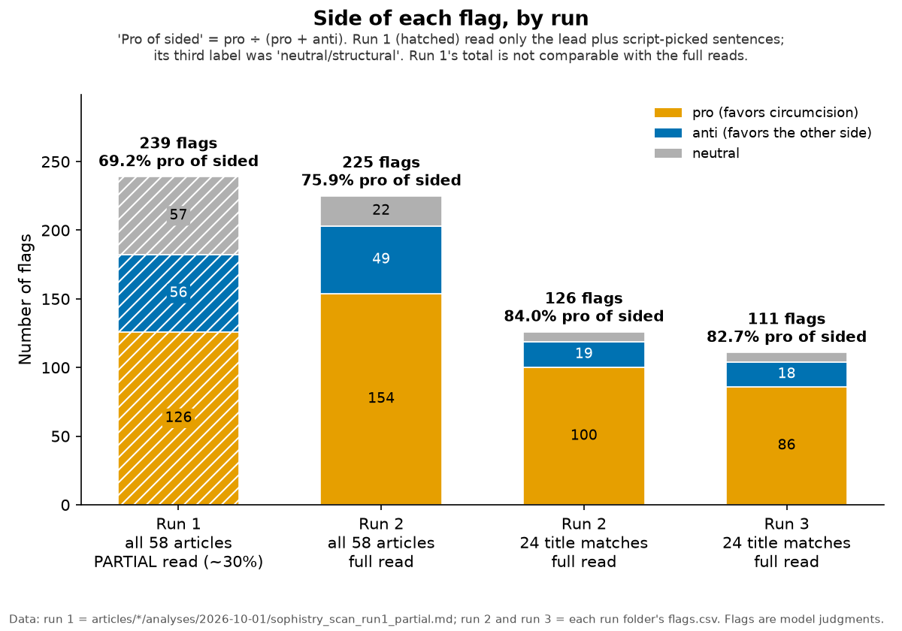

Grokipedia Truth Audit
auditfallacy · citation checks
Audits of Grokipedia articles, done on saved snapshots so every finding can be traced back to the exact text that was read.
What it is
Grokipedia is xAI's AI-written encyclopedia. This project checks how its articles reason and how they cite sources. So far: 58 circumcision-related articles and the Baruch Spinoza article, each topic with its own results page in the repo.
Who it's for
Readers and editors of Grokipedia, people studying AI-written reference text, and anyone who would rather check the findings than take them on trust.
How it works
- Save first. Each article is saved before it's audited, so findings point to the text that was read, even if the live page changes.
- Fallacy scan. A model reads every sentence against a fixed fallacy catalogue (substance_lens v0.5.9) and flags faults in the article's own reasoning, tagged by the side they favor. A script confirms each quote appears in the snapshot.
- Citation and fact check. Scripts count citation markers, sources and dead links; claims are then judged against their sources.
- Open data. Snapshots, flags, tables and scripts are in the repo; counts and charts can be recomputed from the flag files.
Findings so far
-
Circumcision
58 articles · fallacy scanA full read of 10,258 sentences and table rows raised 225 flags (154 pro, 49 anti, 22 neutral). In the 39 male-circumcision articles, 85% of sided flags were pro. A second blind read of the 24 articles with "circumcision" in the title kept the lean (84.0% pro, then 82.7%) and the order of most-flagged articles (Spearman 0.837), but flagged only 77 of the 128 sentences the first read had flagged (60%).

-
Baruch Spinoza
1 article · citation and fact checkFrom citation [90] on, the numbers appear shifted by nine places, so 110 of 389 citation markers (28%) point to the wrong source or to none. Of 263 sentences judged, 41 had a factual problem.
Flags and verdicts are judgments, not proof. No human or independent model has checked them yet, and all scan runs used the same model family, so agreement shows consistency, not correctness. A fallacy flag means the reasoning has a gap, not that the claim is false. Treat single flags as leads.
Status
First runs done 1–2 Oct 2026. Next: re-snapshot and re-scan the same articles later, then more articles and topics. An independent check of sampled flags would strengthen the results; it hasn't been done.
Links
- Repo: neuresthetics/grokipedia-truth-audit
- Circumcision results
- Spinoza results
- How the scans were tested
- Caveats
- substance_lens
Credits
The Grok logo in the header image is a trademark of xAI, used here only for identification. This project is not affiliated with xAI. Logo source: Wikimedia Commons.